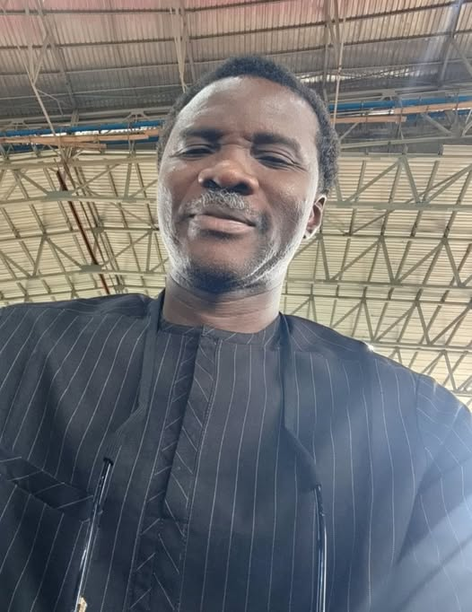

The first three cars I used were official.

The first three cars I used were official.
Mazda 626, Nissan primera,Toyota corolla. All were manual drive.
So when God bought my first car for me,Ford Scorpio,it was still manual.
Then one day I was driving to Ikire town from Ibadan. On getting to Ikire,I saw one of my long time pastor pushing his car to start. At that time ,I had seen him last 15 years back. I could remember he once accommodated me and took care of me.
The meeting was miraculously unexpected because I was never aware he had been transferred to that town. I only went to the town to do my pharmaceutical business.
I alighted from my car to go greet him where he was pushing his car. He was surprised to see me. We discussed and went on our ways.
After few days, I told my wife about that Pastor's situation and we prayed for him.
Next I told my wife that,I wished to give my first car to that pastor. After personal consideration, I placed the car for sale and took all the money to the pastor to buy another car of his choice. I didn't tell him that was what I dis until 10 years afte when we met again. He wasn't aware I sold my car and removed nothing from the money to give him.
I didn't want to give him the car directly so he won't know anything or think I did it out of pity. Giving him the cash won't make him suspect its a sacrifice.
By the way ,my goal was to make only God see me and not even him or anybody.
I didn't hear anything from God to do that. It was purely from my desire to sacrifice that for someone who once took care of me as I trusted in God for the best.
Little did I knew after 10 years I would be able to share testimonies of God's goodness to him. At the time I was sharing the testimonies with him 4 years ago. He came to greet me inside a jeep. And I told him that was the 4th replacement after the sacrifice. He was suprised to know it was my first car I sold to give him the money so he could get a better car. He prayed with me and we praised God together.
Learn this lessons.
It's not everything God must tell you to do before you do it. Sometimes sacrifices are born out of our inner compassion for others as long as it is not a danger to us.
Giving of any kind is strictly spiritual. It is like releasing your virtues into another soil so God can make it multiply in blessing to you. Not a physical blessing, but a spiritual authority to prosper spiritually. Especially when you do to a highly potent spiritual soul. Their spirit prays a lot for you without them knowing it.
Always be a grateful soul. Never forget people in the past that has done you good. Always appreciate them no matter how.
If you really want to move forward in life,you must be a person that thinks impact and impact. Begging people for things shouldn't be your goal. Putting pressure on people to give you shouldn't be your skill . You will lose a lot on the long run. It is better to begin to make reasonable impact on those close to you no matter how little. I have list of people that I intercede for without them knowing it since the past 850 days. There are other missionaries God is taking care of through our ministry. You just must be very impactful.
Give yourself to God and humanity, and there is a way the universe will respond back to you positively.
Selfishness is when you beg people instead of developing values.
Selfishness is when you think about yourself alone without having consideration for others that matter.
God's desire is to make everyone a channel of blessing and not just a receiver but a giver.
In what little way is your life making good impact on others?
Remember, without sacrifice there can't be a success. And successful people knew this.
Much more,you don't see every reasonable person sacrificing around unreasonable altars. It is a waste of time and resources.
May you learn from these. Amen
Your brother
Latunde Akin